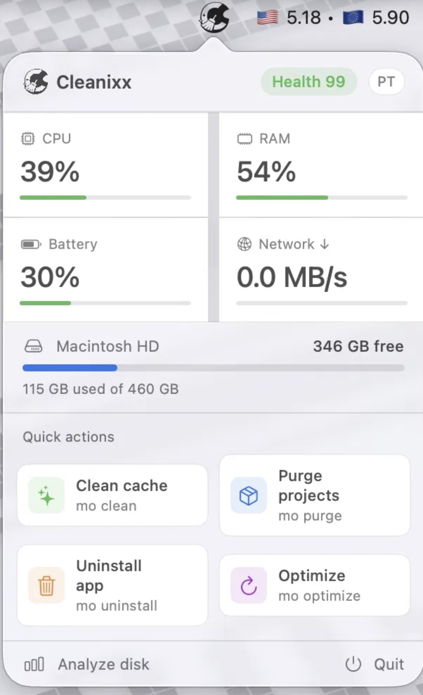
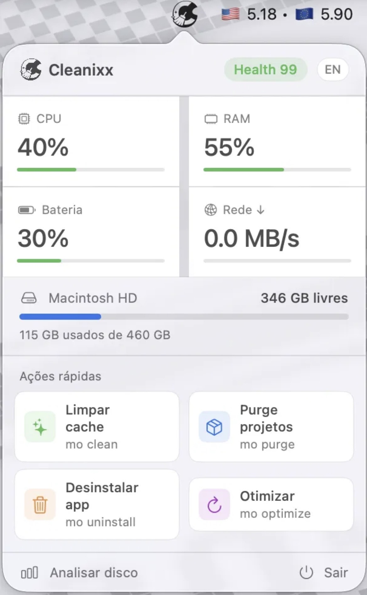

Cleanixx lives in your menu bar. Monitor system health, manage disk space, remove apps completely, and optimize performance — without opening a single window.
O Cleanixx vive na sua barra de menus. Monitore a saúde do sistema, gerencie o disco, remova apps e otimize a performance — sem abrir nenhuma janela.
↓ Download for macOS ↓ Baixar para macOS

What it doesO que faz
CPU, RAM, Battery, and Network updated every 5 seconds. System health score from 0–100 visible at a glance.CPU, RAM, Bateria e Rede atualizados a cada 5 segundos. Health score de 0–100 visível rapidamente.
Free up disk space by removing temporary files, build artifacts, and unused system logs to keep your Mac running fast.Libere espaço removendo arquivos temporários, artefatos de build e logs não utilizados.
Finds and removes node_modules, target, .build and venv folders from your dev projects automatically.Encontra e remove node_modules, target, .build e venv dos seus projetos automaticamente.
Completely remove apps and all their associated files — preferences, caches, launch agents, and support files.Remove apps e todos os arquivos associados — preferências, caches, agentes e arquivos de suporte.
Rebuild system databases, reset network services, refresh Finder and Dock to restore your Mac's performance.Reconstrói bancos de dados, reseta serviços de rede e atualiza Finder e Dock para restaurar a performance.
Visualize disk usage by category and navigate folders to identify what's consuming the most space.Visualize o uso do disco por categoria e navegue pelas pastas para identificar o que mais consome espaço.
How it worksComo funciona
Open the DMG, drag Cleanixx to Applications. No Homebrew or dependencies required.Abra o DMG, arraste o Cleanixx para Aplicativos. Sem Homebrew ou dependências.
Cleanixx starts automatically and stays in your menu bar, always ready with one click.O Cleanixx inicia automaticamente e fica na barra de menus, sempre pronto com um clique.
Pick an action, confirm in Terminal, and watch your Mac breathe again.Escolha uma ação, confirme no Terminal, e veja seu Mac ganhar vida novamente.
Free download. No account required. Works on Apple Silicon and Intel. Download grátis. Sem conta necessária. Funciona no Apple Silicon e Intel.
↓ Buy Cleanixx — $10 ↓ Comprar Cleanixx — $10